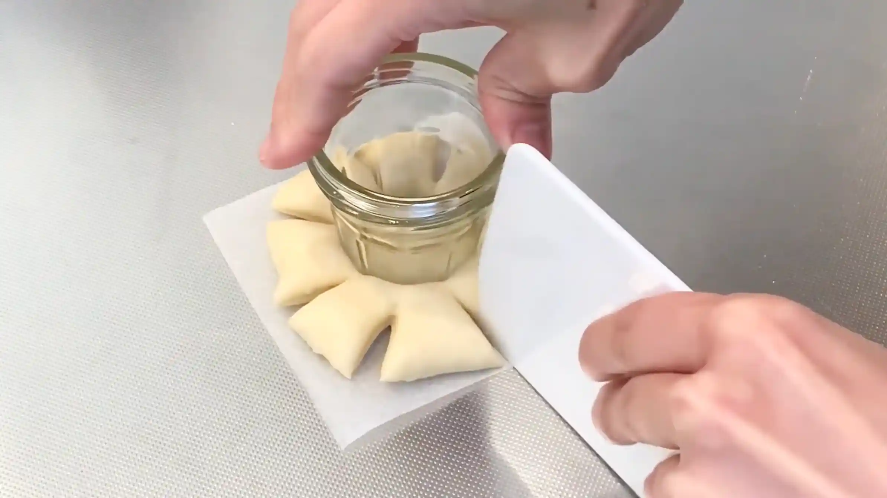
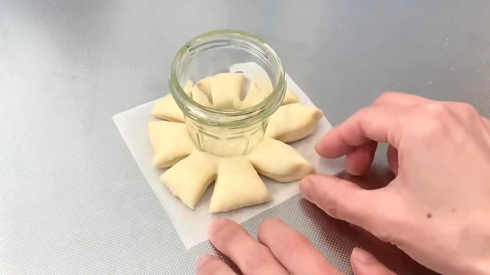
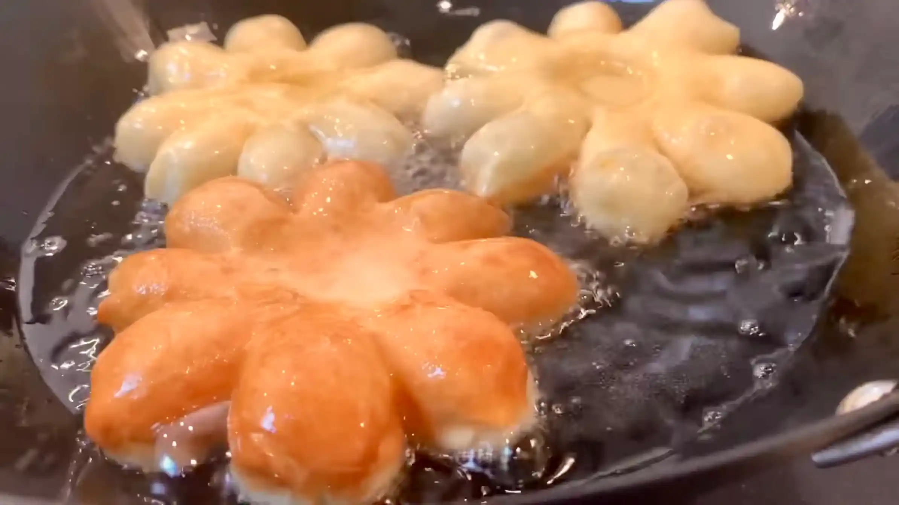

材料 8個分
※粉量を変えると自動計算されます
生地
トッピング
作り方
生地
STEP 1
ホームベーカリーで生地を作る
ホームベーカリーに材料をセットして「生地コース」を選べば、生地作りから一次発酵までお任せできます。コースが終わったら、次の作業に進みます。
ホームベーカリーに材料をセットして「生地コース」を選べば、生地作りから一次発酵までお任せできます。コースが終わったら、次の作業に進みます。
STEP 2
生地を取り出し8等分して丸め、ラップをして常温で15分おく
分割した生地は、表面がなめらかになるように軽く丸めておきます。ここで生地を休ませることで、次の工程で生地を伸ばしやすくなります。
分割した生地は、表面がなめらかになるように軽く丸めておきます。ここで生地を休ませることで、次の工程で生地を伸ばしやすくなります。
STEP 3
10㎝四方に切ったオーブンシートに生地をのせ、平らに伸ばす（[動画 03:27]）
オーブンシートの大きさと同じサイズに、手で厚みを揃えるようにして伸ばしていきます。
オーブンシートの大きさと同じサイズに、手で厚みを揃えるようにして伸ばしていきます。
STEP 4
コップや瓶の底を使い、生地の中央を窪ませる（[動画 03:38]）
ここから楽しいお花成形です。生地は揚げると膨らんで窪みが消えてしまうので、ここでしっかり窪みを作っておくのが仕上がりを可愛くするポイントです。
ここから楽しいお花成形です。生地は揚げると膨らんで窪みが消えてしまうので、ここでしっかり窪みを作っておくのが仕上がりを可愛くするポイントです。
STEP 5
生地の周りに8本切れ目を入れる（[動画 03:46]）
スケッパーなどで簡単に切れ目を入れることができます。ここが花びらの部分になりますので、切れ目はお好きな数だけ入れてください。
スケッパーなどで簡単に切れ目を入れることができます。ここが花びらの部分になりますので、切れ目はお好きな数だけ入れてください。

STEP 6
生地の先を指でつまんで、花びらの形にする（[動画 04:00]）
生地は揚げると膨らむため、花びらはここで成形した形より丸く揚げあがります。花びらの形が残るよう、先端が尖るくらいしっかりつまんでおくのが、可愛いく仕上げるポイントです。
生地は揚げると膨らむため、花びらはここで成形した形より丸く揚げあがります。花びらの形が残るよう、先端が尖るくらいしっかりつまんでおくのが、可愛いく仕上げるポイントです。

STEP 7
160℃の油で色が付くまで揚げる
油に入れた後は生地の色づきを見ながら、全体が均一に揚がるように仕上げます。揚げていくうちに油の温度が上がってくるので、火加減を調整しながらゆっくり揚げるのがふっくら仕上げるコツです。生地の周りに小さな気泡がじわじわ出るくらいを目安に、揚げていきます。
油に入れた後は生地の色づきを見ながら、全体が均一に揚がるように仕上げます。揚げていくうちに油の温度が上がってくるので、火加減を調整しながらゆっくり揚げるのがふっくら仕上げるコツです。生地の周りに小さな気泡がじわじわ出るくらいを目安に、揚げていきます。

STEP 8
お好みで、ジャムや粉砂糖をトッピングする
ブルーベリーやマーマレードなどカラフルなジャムでトッピングしてみました。とっても華やかに仕上がりますね。お好きなトッピングで、ぜひ可愛いお花ドーナツを作ってみてください。
ブルーベリーやマーマレードなどカラフルなジャムでトッピングしてみました。とっても華やかに仕上がりますね。お好きなトッピングで、ぜひ可愛いお花ドーナツを作ってみてください。
動画でチェック
おいしく作るためのワンポイントコラム
専用の型も特別な道具も一切なし！コップを一つだけ使って、とっても可愛いお花形のドーナツを作ります。サクふわの食感になるよう生地の配合にも工夫を凝らした、こだわりのレシピです！それでは、美味しいドーナツを揚げるための3つのコツをご紹介します。
① サクふわ食感を生む粉のコツ
生地には、強力粉と薄力粉を1:1の同量でブレンドして使うのがポイントです。強力粉のもちもち感と薄力粉の歯切れの良さが合わさることで、ドーナツに最適なサクふわ食感を引き出すことができます。また、薄力粉をブレンドすることで生地が膨らみすぎるのを抑え、揚げた時に花びらのエッジが綺麗に見えるという嬉しいメリットもあります！
② 道具いらず！可愛いお花成形のコツ
オーブンシートの上で生地を平らに伸ばしたら、身近なコップや瓶の底を押し当てて中央をくぼませるのが綺麗な形を作るコツです。あとは周りに8本の切れ目を入れ、先を指でつまむだけ。専用の型を使わなくても、誰でも簡単にお花形に仕上げることができます！揚げると生地が膨らむため、花びらの先は強めにつまんでおくのがおすすめ。形が崩れにくく、美しい仕上がりになります。
③ 揚げのコツ
揚げる際は、160℃の低温の油でじっくり色付くまで揚げるのが最大のポイント！（生地の周りに小さな気泡がじわじわ出るくらいを目安にしてください）お砂糖や卵が入ったリッチな生地は焦げやすいため、温度が高すぎると中まで火が通る前に表面が焦げてしまいます。低温で優しく揚げることで中までじっくり火を通すと、ふんわりとした揚げ上がりになります。
「お花形なんて難しそう…」と思っている方にこそ、ぜひ試していただきたいお手軽レシピです！仕上げに中央のくぼみへお好みのジャムをのせれば、見た目もカラフルで可愛いお花ドーナツのできあがり。揚げたてのサクふわ感を、ぜひ味わってみてください！
① サクふわ食感を生む粉のコツ
生地には、強力粉と薄力粉を1:1の同量でブレンドして使うのがポイントです。強力粉のもちもち感と薄力粉の歯切れの良さが合わさることで、ドーナツに最適なサクふわ食感を引き出すことができます。また、薄力粉をブレンドすることで生地が膨らみすぎるのを抑え、揚げた時に花びらのエッジが綺麗に見えるという嬉しいメリットもあります！
② 道具いらず！可愛いお花成形のコツ
オーブンシートの上で生地を平らに伸ばしたら、身近なコップや瓶の底を押し当てて中央をくぼませるのが綺麗な形を作るコツです。あとは周りに8本の切れ目を入れ、先を指でつまむだけ。専用の型を使わなくても、誰でも簡単にお花形に仕上げることができます！揚げると生地が膨らむため、花びらの先は強めにつまんでおくのがおすすめ。形が崩れにくく、美しい仕上がりになります。
③ 揚げのコツ
揚げる際は、160℃の低温の油でじっくり色付くまで揚げるのが最大のポイント！（生地の周りに小さな気泡がじわじわ出るくらいを目安にしてください）お砂糖や卵が入ったリッチな生地は焦げやすいため、温度が高すぎると中まで火が通る前に表面が焦げてしまいます。低温で優しく揚げることで中までじっくり火を通すと、ふんわりとした揚げ上がりになります。
「お花形なんて難しそう…」と思っている方にこそ、ぜひ試していただきたいお手軽レシピです！仕上げに中央のくぼみへお好みのジャムをのせれば、見た目もカラフルで可愛いお花ドーナツのできあがり。揚げたてのサクふわ感を、ぜひ味わってみてください！


今回は特別な型や道具を使わずに作れる、見た目も可愛い「お花ドーナツ」をご紹介します！中央にくぼみを作り、周りに切れ込みを入れるだけで、まるでお店のような形に仕上がります。
コラムでは「サクふわ食感を生む粉のコツ」「道具いらず！可愛いお花成形のコツ」「揚げのコツ」の3つのポイントをご紹介します。